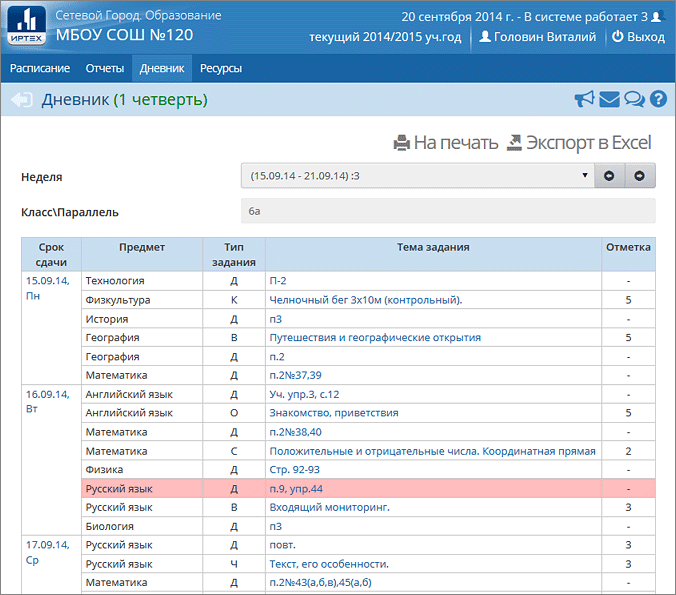

На этой странице отображаются назначенные вам на выбранной неделе задания.
В таблице указываются крайний срок сдачи (т.е. дата выполнения), предмет, тема задания и тип. Все задания отсортированы по назначенному сроку сдачи, а внутри одного дня - по порядку в соответствии с расписанием.

В дневнике отображаются задания следующих видов:
|
|
| · | домашние задания (тип "Д") на текущую неделю независимо от наличия оценки;
|
| · | задания с уже выставленной оценкой;
|
| · | задания с необязательной оценкой, если дата выполнения ещё не истекла;
|
| · | задания с обязательной оценкой (независимо от срока сдачи! если срок сдачи уже прошёл, то обязательные задания помечаются красным цветом);
|
| · | назначенные учителем задания по электронным учебным курсам (чтобы их выполнить, необходимо нажать на их название в графе "Тема задания").
|
|
|
После щелчка мышью на теме задания, открывается экран "Подробности задания" (здесь может содержаться комментарий от учителя, присоединённый файл и т.д.).
Дневник (для родителя)
У пользователей с ролью родителя Дневник выглядит так же, как у ученика, с той разницей, что есть дополнительный выпадающий список Ученики. Этот список предназначен для тех родителей, у которых в школе учатся сразу несколько детей. Это позволит просмотреть дневник того из них, кого требуется.